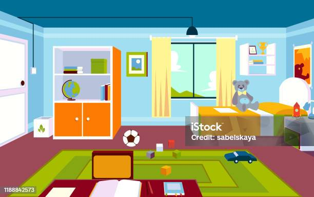

Kapp on ühe või mitme uksega mööbliese asjade hoidmiseks. Antiikajal tunti küll juba enamikku mööbliesemeid, mis on kasutusel tänapäeval, kuid kappi kasutati üksnes kauplusemööblina, mitte kodumajapidamises.